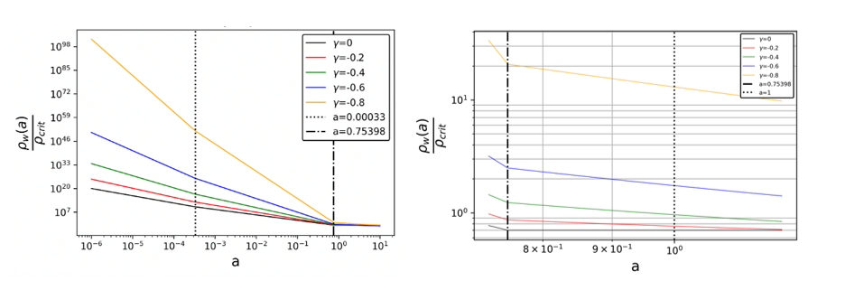
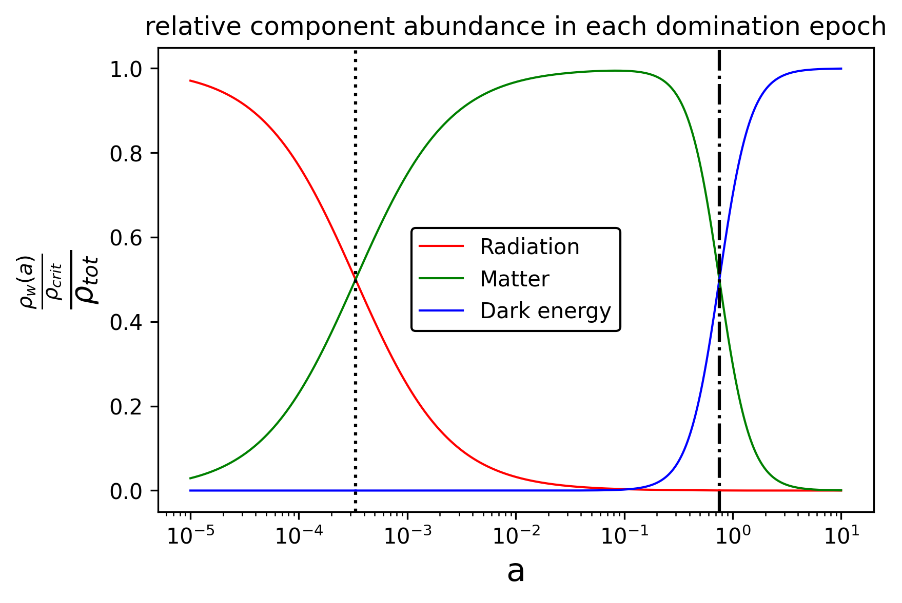

Matter-energy density evolution and spatial expansion in the context of time-varying speed of light cosmology
Abstract
This paper analyzes how the introduction of a time-varying speed of light effects the evolution of matter-energy component densities in specific component domination epochs. To answer this question, the Friedmann equations and continuity equation for a generic varying speed of light were analytically derived. A specific time-varying speed of light was then introduced in these dynamical equations in order determine how specific component densities dilute in an expanding universe.
Our results showed that a varying speed of light breaks the law of conservation of energy. Consequently, a positive correlation was found between the rate at which the speed of light decreases over time and the rate at which matter, radiation and dark energy densities dilute as the Universe expands. Additionally, dark energy density was found to be non-constant and it was observed that the introduction of a varying speed of light has no influence on the cutoff points of domination epochs. These results were acquired, assuming a single-component universe and as such, a multi-component model is needed in further research to more accurately describe density changes near domination epoch transitions.
Our results showed that a varying speed of light breaks the law of conservation of energy. Consequently, a positive correlation was found between the rate at which the speed of light decreases over time and the rate at which matter, radiation and dark energy densities dilute as the Universe expands. Additionally, dark energy density was found to be non-constant and it was observed that the introduction of a varying speed of light has no influence on the cutoff points of domination epochs. These results were acquired, assuming a single-component universe and as such, a multi-component model is needed in further research to more accurately describe density changes near domination epoch transitions.
Figures

Figure 2. Summary of evolution with increasing scale factor of matter-energy component densities for all γ values. Component densities are shown in their respective domination epochs, overlaid for each γ value to illustrate how the rate of density dilution changes with varying speed of light.

Figure 3. Relative matter-energy component abundances as a function of the scale factor. The dotted line marks the radiation–matter transition and the dash-dotted line marks the matter–dark energy transition. Crucially, these domination epoch cutoffs are identical for all γ values, including the standard Λ-CDM case.